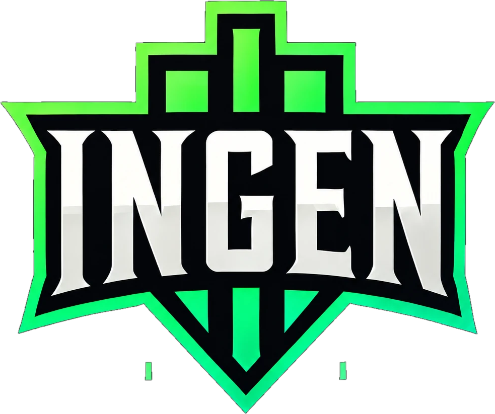

O que o site da INGEN já entrega hoje e a ordem recomendada para as próximas entregas, da mais prioritária para a menos prioritária.
A plataforma lê os dados da Riot Games e da Twitch automaticamente e transforma em páginas públicas para o time, os adversários e a comunidade, além de ferramentas internas para a staff e os streamers.
A ordem segue quatro critérios: primeiro o que está errado, depois o que entrega mais com menos esforço, em seguida o que aproveita dados que já estão sendo coletados, e por fim o que depende de decisões ou de terceiros.
Tela de picks e bans no estilo do drafter.lol, com a cara da INGEN: o adversário sobe o próprio logo e escolhe a cor do time, e a tela inteira se adapta.
Itens que precisam de uma resposta ou de material do time antes de serem feitos.
| Assunto | O que precisamos | Destrava |
|---|---|---|
| Logo vetorial | Arquivo SVG com fundo transparente, ou aprovação de um redesenho fiel em vetor. Confirmar se os dois traços verdes abaixo do escudo fazem parte do símbolo. | Animação do logo (onda 10) |
| Forma de login | Usuário e senha agora e Discord depois (recomendado), ou Discord desde o início. | Ondas 4, 5 e 7 |
| Partidas Flex e Clash | Hoje só a Solo/Duo é gravada. Gravar também Flex e Clash traria os jogos do time junto. | Draft v2, "Jogando com", campeonatos |
| Redes oficiais | O time tem X e YouTube? O Instagram (@ingen.gg) já está no site. | Rodapé (onda 1) |
| Notícias | Quando reativar a seção, que já está pronta. | Onda 10 |
Montada a partir do histórico do código e das conversas com o Claude, incluindo o que foi feito fora do repositório. Horários de Brasília.
| Quando | O quê | Onde |
|---|---|---|
| 10/11 | Estrutura do projeto, direção visual e arquitetura. | Código |
| 11/11 · madrugada | Fase 1 no ar: home, elenco com Mapa do Rift, perfil, comparar, scouting, ranking e página 404 "Fora do mapa". | Código |
| 11/11 · tarde | Sync automático, perfil completo, selo "Ao vivo" da Twitch, atualização a cada 5 minutos, cadastro pelo chat. | Código |
| 11/11 · noite | Twitch e Discord do time, SEO completo, ranking com destaques, scouting com leitura automática. | Código |
| 12/11 · tarde | Reservas no elenco e kit de stream com 8 overlays e guia. | Código |
| 12/11 · noite | Entra Hero (MID, Silver); canal da Twitch de Nacht. | Código |
| 12/11 · noite | Compra e ligação do domínio ingengg.com.br (Registro.br e Vercel). | Conversa "Compra do domínio" |
| 12 e 13/11 | Kit de stream testado e aprovado no OBS. | Teste do time |
| 13/11 · madrugada | Chave definitiva da Riot. | GitHub e Riot |
| 13/11 · madrugada | Banco passa a dormir quando nada muda. | Conversa "Neon" |
| 13/11 · madrugada | Coleta de dados nova e histórico completo das 483 partidas; domínio oficial no Google; teste de alerta pelo chat; este planejamento. | Conversa "Planejamento" |
| 13/11 · madrugada | Instagram oficial no site; botões de teste do kit copiam o comando; PDF passa a ser atualizado por toda conversa. | Conversa "Planejamento" |